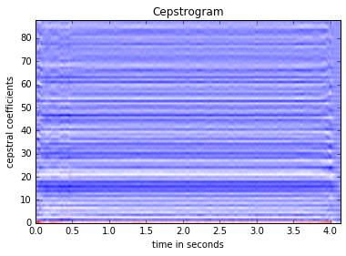
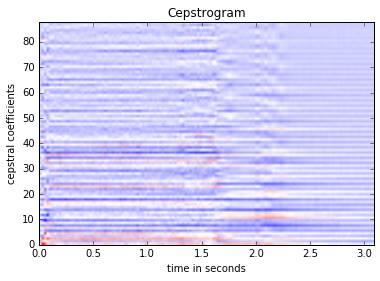
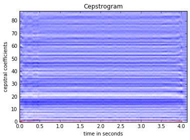
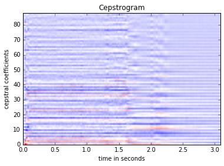

Results
The system calculated the MFCCs of each instrument from the sample recordings and plotted a cepstrogram for each instrument.
Trumpet
Vibraphone

Violin
Each cepstrogram looks different from one another.
~ Final project for Northwestern University EECS 352, Professor Bryan Pardo ~
alekacheung2017@u.northwestern.edu
heekim2016@u.northwestern.edu
michaelwang2016@u.northwestern.edu
Our project is to create a system that could analyze and identify which instrument (violin, trumpet, or vibraphone) is playing a melody. Our system will try to complete this task by using Mel-frequency cepstral coefficients (MFCCs).
It could be a useful system because successfully developing a musical instrument identification system (MIIS) will help us learn how human brains classify and identify sounds and how we could then use that knowledge to make a computer system do the same. A successful MIIS could also make it possible to create a database of songs by instrument type. In addition, MIIS could enhance the current transcription systems to be able to indicate which lines transcribed are played by which instruments to make the transcribed scores even more informative.
Our system will try to determine whether a melody is being played by a violin, a trumpet, or a vibraphone by using Mel-frequency cepstral coefficients (MFCCs).
We could use the samples of recordings of violin, Bb trumpet, and vibraphone playing different notes to see whether the system can identify which instrument is being played. These recordings are downloaded from University of Iowa Electronic Music Studios. They are aiff-c audio types in various sizes; we converted them to mono 16-bit wav files, using Audacity, to be compatible with librosa. They are already labeled. We will also use samples of monophonic melodies played by the three different instruments to test the system.
The system calculated the MFCCs of each instrument from the sample recordings and plotted a cepstrogram for each instrument.
Trumpet
Vibraphone
Violin
Each cepstrogram looks different from one another.
Created by PK